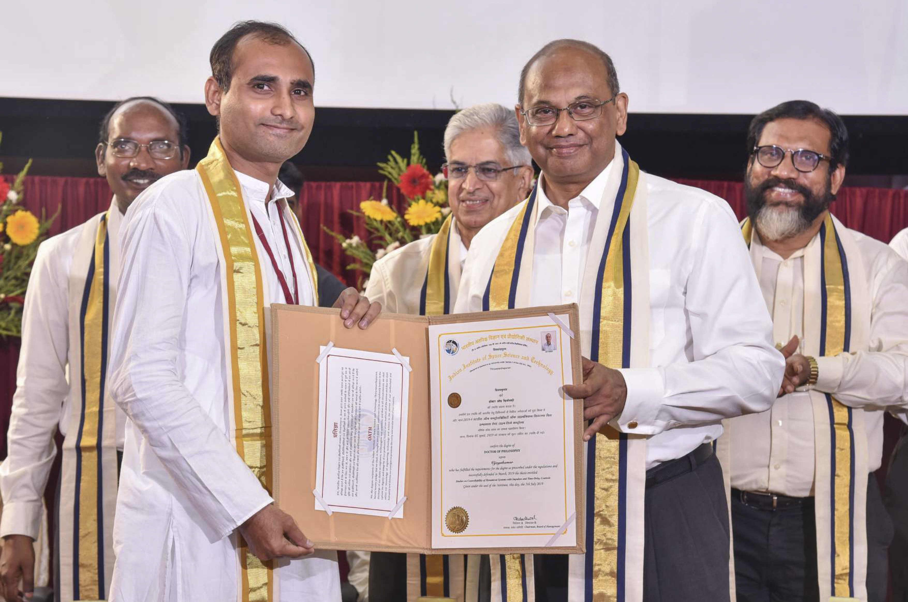

About
I study how groups of interacting agents can be steered, observed, and brought to agreement – through the lens of control theory, impulsive dynamics, and time-delays.
I earned my Doctor of Philosophy from the Indian Institute of Space Science and Technology (IIST), Thiruvananthapuram, Kerala, in 2019, under Raju K. George, with a thesis on Studies on Controllability of Dynamical Systems with Impulses and Time-Delay Controls.
